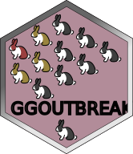

Re-sample an empirical IP distribution direct from data
Source:R/infectivity-profile.R
make_resampled_ip.RdSuits larger contact tracing data sets where there is a delay between 2 events which may or may not be precisely known.
Arguments
- tau
the delay between first and second events
- min_tau
the minimum delay for interval censored delays
- max_tau
the maximum delay for interval censored delays
- add_noise
adds noise to each date point for each replicate
- truncate
what is the minimum realistic value of the parameter
- n_boots
number of replicates to generate
- seed
a random number seed for reproducibility
Examples
tau = rgamma2(100, 5,2)
ip = make_resampled_ip(min_tau = tau-1, max_tau = tau+1, seed = 100)
if(interactive()) {
plot_ip(ip,alpha=0.1)
}